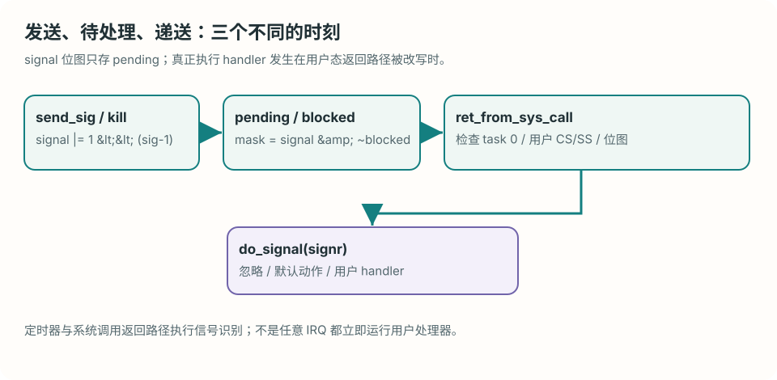
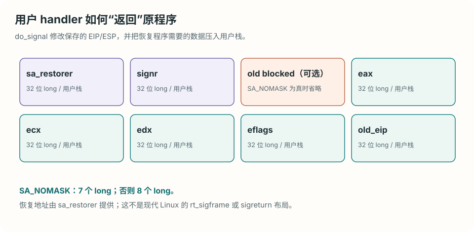

信号：从 pending 位图到用户栈帧
剖析 Linux 0.11 的 32 位信号位图、系统调用返回时的信号识别、SA_ONESHOT / SA_NOMASK 与早期 handler/restorer ABI。
pending 位图 · 用户栈帧收到信号，为什么 handler 不立刻执行？
信号让一个任务告诉另一个任务“有事件需要处理”。但在 Linux 0.11 中，发送方通常只设置目标 task_struct.signal 的一个比特；目标任务不会在发送方设置这一位的瞬间立刻跳进用户处理函数。信号递送要等到可检查的返回路径，而且还要考虑 blocked 与任务是否运行在用户态。

把信号叫“软件中断”只是类比；它不像 CPU IDT 中断那样通过一个固定硬件向量进入 handler。准确的模型是一个状态位图，加上一套内核选择何时修改用户态返回现场的规则。
为什么 signal 与 blocked 都是位图
task_struct 中，unsigned long signal 表示待处理信号位，unsigned long blocked 表示阻塞信号位，sigaction[32] 存每一种信号的动作。该版本的 sigset_t 为 32 位，常用的信号编号从 1 起，信号 n 对应 1U << (n-1)。
SIGINT = 2
SIGCHLD = 17
pending = (1 << (SIGINT-1)) | (1 << (SIGCHLD-1))
blocked = (1 << (SIGINT-1))
deliverable = pending & ~blocked
print(hex(deliverable)) # 0x10000（仅 SIGCHLD）这段算术只验证位位置，不代表某个信号必定能够被用户程序捕获。比如 SIGKILL 不能被普通方式屏蔽或自定义处理；本版 sys_ssetmask 会强制清掉 SIGKILL 的 blocked 位。
为什么信号 17 对应的位不是十进制 17？（展开核对）
信号编号从 1 起。第 n 个信号的位位置是 n-1，因此 SIGCHLD=17 映射为 1<<16 = 65536 = 0x10000。
发送端：sys_kill 是 PID 过滤与权限检查
kernel/exit.c 实现 sys_kill 与内部 send_sig。后者首先检查任务指针和信号号是否合法（1–32），然后结合 priv、有效用户 ID 和特权判断能否发出信号。成功则置位 p->signal |= 1<<(sig-1)。
if (!p || sig<1 || sig>32)
return -EINVAL;
p->signal |= (1<<(sig-1));注意这个版本的 sys_kill 对 pid=0、正 pid、pid=-1、负进程组分别使用分支，而且其权限与错误返回还有早期实现局限，不可直接称作 POSIX 当前规范的完整实现。tell_father() 也会直接设置父任务的 SIGCHLD 位。
递送端：精确看 ret_from_sys_call
kernel/system_call.s 在系统调用或时钟中断结束前执行 ret_from_sys_call。它跳过 task 0，检查保存的 CS/SS 是否与用户模式段选择子相符，取待处理信号与 ~blocked 的交集，再挑选其中一个信号调用 _do_signal，然后通过 iret 返回。
为何必须检查“返回到用户态”？因为用户 handler 要在用户栈和用户代码段执行，而不是直接在 ring 0 的任意内核栈上运行。信号处理实际上在修改尚未恢复的返回现场，因此与第 9 章的用户返回帧紧密相关。
grep -n 'ret_from_sys_call\|signal\|blocked\|_do_signal' kernel/system_call.s
grep -n 'void do_signal\|SA_ONESHOT\|SA_NOMASK' kernel/signal.c
grep -n 'SIGCHLD\|SIGKILL' include/signal.h预期能在汇编中看到位图过滤与选择；C 层 do_signal() 处理了 SIG_IGN、默认动作与自定义 handler。不能把它合并成一个并不存在的 RESTORE_ALL 伪宏。
signal() 与 sigaction() 在 0.11 的区别
sys_signal(signum,handler,restorer) 构造 SA_ONESHOT | SA_NOMASK 的动作：处理一次后需要重新安装 handler，并在处理期间不按默认策略自动阻塞本信号。sys_sigaction 接收用户传入的 struct sigaction；它会根据 SA_NOMASK 决定是否将当前信号也加进 sa_mask。
| 字段 / 标记 | v0.11 效果 |
|---|---|
sa_handler | 0=默认、1=忽略、其他为用户函数地址 |
sa_mask | handler 期间附加阻塞的信号集合 |
SA_ONESHOT | 递送一次后清除自定义 handler |
SA_NOMASK | 旧实现中决定栈帧是否保存 old blocked，影响遮蔽语义 |
sa_restorer | 用户处理函数返回后执行的恢复入口 |
用户栈帧的 7 或 8 个 long 从哪里来？
do_signal 在决定执行用户 handler 后，修改保存的用户返回地址，使下一次 iret 直接进入该 handler。接着预留 longs = (SA_NOMASK ? 7 : 8) 个 32 位字的用户栈空间，写入 restorer、信号编号、可选旧屏蔽集以及 EAX、ECX、EDX、EFLAGS、旧 EIP，最后将本动作的 sa_mask 并入 current->blocked。

longs = (sa->sa_flags & SA_NOMASK)?7:8;
*(&esp) -= longs;
verify_area(esp,longs*4);
/* 随后使用 put_fs_long 写用户栈 */读这段源码的关键不是背 7 和 8，而是理解内核为何要预留这些数据：处理器通过 iret 已经把控制权交给 handler，handler 返回时必须有一条受约定的 restorer 路径把信号前的状态恢复。
当 SA_NOMASK 置位时，与普通处理相比用户栈里少哪一项？（展开核对）
少 old blocked（旧信号阻塞位图），因此 8 个 32 位字变成 7 个。源码在写入信号编号之后用条件分支决定是否写这一项。
信号不等于可可靠计数的消息队列
当同一种信号被连续发送两次，而目标进程还未递送时，只有一个待处理比特。位图没有多份记录，所以不能通过它可靠累计“发生了多少次”。默认动作也不等于全部终止：do_signal 中 SIGCHLD 的默认处理直接返回；已明确 SIG_IGN 的 handler 同样返回。
需要检查具体版本中信号屏蔽、竞争和任务退出行为；不要用当前 POSIX 的完整可移植性要求替代这个 1991 年实现。更不应将本章的教学位运算当成真实的异步信号安全实验。
进一步阅读的真实入口
- include/signal.h：信号号、标记和 sigaction 字段。
- kernel/exit.c：sys_kill、send_sig、SIGCHLD 通知。
- kernel/system_call.s：ret_from_sys_call 信号识别。
- kernel/signal.c：do_signal 和用户栈帧。
- include/linux/sched.h：任务的 pending、blocked 与动作表。
下一章用另一个“位或字节与物理资源”的例子继续推导：mem_map 为什么按页记录引用计数，而不是简单把一个页标成“可用/不可用”？